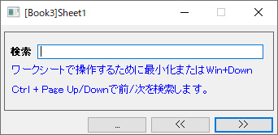
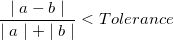
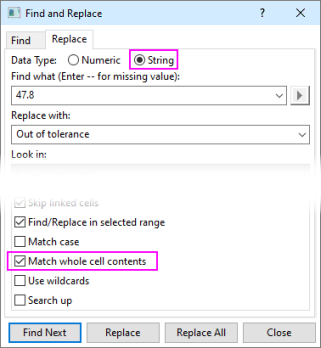

ワークシートデータの検索と置換
Wks-Find-Replace-Data
ワークシートデータの検索と置換をするには、検索と置換ツールを使用できます。
- 簡易検索ダイアログを開きます。
- 編集：シート内を検索を選択します
- Ctrl + F キーを押します
- ワークシートのミニツールバーにある検索ボタン
 をクリックします
をクリックします
- 簡易検索ダイアログの
 ボタンをクリックし、検索と置換ダイアログが検索タブが選択された状態で開きます。
ボタンをクリックし、検索と置換ダイアログが検索タブが選択された状態で開きます。
- メニューから編集：置換を選択し、置き換えタブが選択された状態で直接開くことができます。
このツールは数値データと文字列データの両方を扱うことができます。
簡易検索ダイアログ
このダイアログを使うと、ワークシート内の数値または文字列を検索することができます。

- ダイアログの最小化ボタンをクリックするか、Win + 下方向キーを押してダイアログを最小化すると、ワークシートで範囲を選択して、選択した範囲を制限できます。
-
 または
または をクリックする以外に、Ctrl + Page Up / Downキーを押して、選択した範囲で前/次を検索できます。
をクリックする以外に、Ctrl + Page Up / Downキーを押して、選択した範囲で前/次を検索できます。
検索タブ
検索タブを使用して、ワークシート内の数値データまたは文字列データを検索します。
| データタイプ
|
検索したいデータの種類を指定します。
|
| 条件
|
このチェックボックスは、データ種類で数値を選択したときのみ利用可能です。これにより、条件の構築に使用する演算子を指定できます。例えば、条件ドロップダウンリストで>を選択し、 検索内容編集ボックスに3を入力すると、3より大きいデータ値が検索されます。
- =： 等しい
- <：未満
- <=：より大きくない
- >：より大きい
- >=：より小さくない
- !=：等しくない
|
| 検索内容
|
検索したい値を指定します。
データ種類で数値ラジオボタンが選択されている場合、検索内容編集ボックスの右側にある右三角形ボタン をクリックし、ショートカットメニューからオプションを選択できます。 をクリックし、ショートカットメニューからオプションを選択できます。
- -- 欠損値のみ
- "--"が、検索内容編集ボックスに表示されます。これは欠損値を意味します。
- - 欠損値/空セル/テキストセル
- "-"が、検索内容編集ボックスに表示されます。これは欠落値、空白セル、テキストセルを意味します。
データ種類グループで文字列ラジオボタンを選択すると、検索に次のワイルドカードを使用できます。
- * 任意の文字列
- * は任意の長さの文字列を表すために使用できます。例えば、s*d では ”sad”と”started”が見つかります。
- ? 任意の一文字
- ? は検索対象編集ボックスで任意の一文字の代わりとして使用できます。例えば、s?t では”sat”と”set”が見つかります。
- ~の後に ?、*、または~
- "~?" で疑問符を検索、 "~*"でアスタリスクを検索、"~~" でその他のチルダ文字を検索します。
検索内容文字列にワイルドカード"?"や"*"が使用されている場合、検索はセルの内容全体と一致しなければならないことに注意してください(セルの内容全体に一致するかどうかにかかわらず)。
|
| 検索場所
|
検索内容値を検索する場所を指定します。このオプションは、オプショングループ検索・置換を選択領域に限定がチェックされていない場合にのみ利用できます。
- アクティブワークシート
- アクティブなワークシートです。
- アクティブワークブック
- アクティブワークブック内のシート。
- アクティブフォルダ中の全ワークブック
- アクティブフォルダ内のすべてのワークブック（サブフォルダは除く）。
- アクティブフォルダ内のすべてのワークブック（再帰的）
- アクティブフォルダ内のすべてのブック（サブフォルダも含む）。
- アクティブフォルダ中の全てのワークブック（オープンのもの）
- アクティブフォルダ内の非表示でないワークブックがすべて。
- プロジェクト内の全ワークブック
- 現プロジェクトの全てのワークブック
|
| オプション
|
- 検索・置換を選択領域に限定
- ダイアログを開く前に範囲を選択している場合、このチェックボックスが利用可能になり、デフォルトで選択されます。このオプションを使用して、検索範囲を選択した範囲に制限するかどうかを指定できます。
- 絶対値で検索する
- 数値のデータタイプが選択されている場合にのみ利用可能です。このオプションを使用して、条件に対してセルの絶対値を使用するかどうかを指定します。
- 上に向かって検索する
- 上方向に検索するかどうかを指定します。
- 許容値
- 数値のデータタイプが選択されている場合にのみ利用可能です。このオプションを使用して、ワークシートデータ値と検索する値との間の許容誤差を指定します。Originでは、2つの数値aとbが次の条件を満たす場合に等しいと見なします：

- セル式内のみを検索
- 文字列のデータ種類が選択されている場合にのみ利用可能です。セルの数式内のみを検索する場合に使用します。数式を表示（式を表示ミニツールバーを選択）したり、編集モード（編集: 編集モード）に切り替える必要はありません。
セルリンクも検索に含める場合は、このチェックボックスを外します。
- ノートを含める
- 文字列のデータ種類が選択されていて、セル式内のみを検索にチェックを付けていない場合に利用できます。検索時にワークシートのセルに埋め込まれたノートを含めるかどうかを指定します。なお、この場合はセルコメントの注釈は含まれません。
- 検索時にワークシートのセルに埋め込まれたノートを含めるかどうかを指定します
- 文字列のデータ種類が選択されている場合にのみ利用可能です。検索で大文字と小文字を区別するかどうかを指定します。
- セルの内容全体を一致させる
- 文字列のデータ種類が選択されている場合にのみ利用可能です。検索内容の値をセルの内容全体と比較するかどうかを指定します。このチェックボックスを選択すると、検索内容文字列がセル全体と一致する場合にのみ見つかったと見なされます。
- ラベル行を含める
- 文字列のデータ種類が選択されている場合にのみ利用可能です。検索範囲に列ラベル行を含めるかどうかを指定します。
|
| 次を検索
|
検索条件に一致する値の次の出現を検索します。
|
置き換えタブ
置き換えタブを使用して、数値または文字列値を別の値に置換できます。
 | 数値を文字列に置き換えるには、文字列を選択し、セルの内容全体を一致させるボックスをチェックします。

|
| データタイプ
|
置換したいデータの種類を指定します。
|
| 条件
|
このチェックボックスは、データ種類で数値を選択したときのみ利用可能です。これにより、条件の構築に使用する演算子を指定できます。例えば、条件ドロップダウンリストで>を選択し、 検索内容編集ボックスに3を入力すると、3より大きいデータ値が検索されます。
- =： 等しい
- <：未満
- <=：より大きくない
- >：より大きい
- >=：より小さくない
- !=：等しくない
|
| 検索内容
|
置換したい値を指定します。
データ種類で数値ラジオボタンが選択されている場合、検索内容編集ボックスの右側にある右三角形ボタンをクリックし、ショートカットメニューからオプションを選択できます。
- -- 欠損値のみ
- "--"が、検索内容編集ボックスに表示されます。これは欠損値を意味します。
- - 欠損値/空セル/テキストセル
- "-"が、検索内容編集ボックスに表示されます。これは欠落値、空白セル、テキストセルを意味します。
データ種類グループで文字列ラジオボタンを選択すると、検索に次のワイルドカードを使用できます。
- * 任意の文字列
- * は任意の長さの文字列を表すために使用できます。例えば、s*d では ”sad”と”started”が見つかります。
- ? 任意の一文字
- ? は検索対象編集ボックスで任意の一文字の代わりとして使用できます。例えば、s?t では”sat”と”set”が見つかります。
- ~の後に ?、*、または~
- "~?" で疑問符を検索、 "~*"でアスタリスクを検索、"~~" でその他のチルダ文字を検索します。
検索文字列にワイルドカード"?"や"*"が使用されている場合、検索はセルの内容全体と一致しなければならないことに注意してください(セルの内容全体を一致させるかどうかにかかわらず)。
|
| 置換先
|
見つかった値の置換後の新しい値を指定します。
|
| 検索場所
|
置換する値を検索する範囲を指定します。このオプションは、オプショングループ検索・置換を選択領域に限定がチェックされていない場合にのみ利用できます。
- アクティブワークシート
- アクティブなワークシートです。
- アクティブワークブック
- アクティブワークブック内のシート。
- アクティブフォルダ中の全ワークブック
- アクティブフォルダ内のすべてのワークブック（サブフォルダは除く）。
- アクティブフォルダ内のすべてのワークブック（再帰的）
- アクティブフォルダ内のすべてのブック（サブフォルダも含む）。
- アクティブフォルダ中の全てのワークブック（オープンのもの）
- アクティブフォルダ内の非表示でないワークブックがすべて。
- プロジェクト内の全ワークブック
- 現プロジェクトの全てのワークブック
|
| オプション
|
- 検索・置換を選択領域に限定
- ダイアログを開く前に範囲を選択している場合、このチェックボックスが利用可能になり、デフォルトで選択されます。このオプションを使用して、検索範囲を選択した範囲に制限するかどうかを指定できます。
- 絶対値で検索する
- 数値のデータタイプが選択されている場合にのみ利用可能です。このオプションを使用して、条件に対してセルの絶対値を使用するかどうかを指定します。
- 元の正負符号を保持する
- 数値のデータタイプが選択されている場合にのみ利用可能です。条件が満たされた場合に、見つかった値の元の符号を保持するかどうかを指定します。
- 条件に合わないものを欠落値に変える
- 数値のデータタイプが選択されている場合にのみ利用可能です。このチェックボックスを選択すると、条件を満たさない値が欠損値として設定されます。
- 上に向かって検索する
- 上方向に検索するかどうかを指定します。
- 許容値
- 数値のデータタイプが選択されている場合にのみ利用可能です。このオプションを使用して、ワークシートデータ値と検索する値との間の許容誤差を指定します。Originでは、2つの数値aとbが次の条件を満たす場合に等しいと見なします：
- セル式内のみを検索
- 文字列のデータ種類が選択されている場合にのみ利用可能です。セルの数式内のみを検索する場合に使用します。数式を表示（式を表示ミニツールバーを選択）したり、編集モード（編集: 編集モード）に切り替える必要はありません。
セルリンクも検索に含める場合は、このチェックボックスを外します。
- 大文字と小文字を区別する
- 文字列のデータ種類が選択されている場合にのみ利用可能です。検索で大文字と小文字を区別するかどうかを指定します。
- セルの内容全体を一致させる
- 文字列のデータ種類が選択されている場合にのみ利用可能です。検索内容の値をセルの内容全体と比較するかどうかを指定します。このチェックボックスを選択すると、検索内容文字列がセル全体と一致する場合にのみ見つかったと見なされます。
- ワイルドカード文字を使う
- 文字列のデータ種類が選択されている場合にのみ利用可能です。検索内容の中でワイルドカード（? と *）を使用するかどうかを指定します。このチェックボックスを選択すると、「セルの内容全体を一致させる」のチェックボックスは無効になります。
- ラベル行を含める
- 文字列のデータ種類が選択されている場合にのみ利用可能です。これを使用して、検索範囲に列ラベル行を含めるかどうかを指定します。
|
| 次を検索
|
次の検索内容の値を検索します。
|
| 置換
|
現在検出された値を置換します。
|
| 全て置換
|
検索内容値のすべての出現箇所を置換します。
|